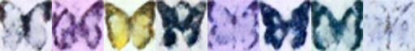

Diffusion课程（一）- 介绍
转载自：https://huggingface.co/learn/diffusion-course
概述
什么是扩散模型
扩散模型是对“生成模型”的算法的相对较新的补充。生成模型的目标是在给定大量训练示例的情况下学习如何生成数据，例如图像或音频。一个好的生成模型将创建一组类似于训练数据的多样化输出，而不是精确的副本。扩散模型如何实现这一目标？为了说明目的，让我们重点关注图像生成案例。

扩散模型成功的秘诀在于扩散过程的迭代性质。生成从随机噪声开始，但经过多个步骤逐渐细化，直到出现输出图像。在每一步中，模型都会估计我们如何从当前输入变为完全去噪的版本。然而，由于我们在每一步中只进行很小的更改，因此早期阶段（预测最终输出极其困难）的估计中的任何错误都可以在以后的更新中纠正。
与其他一些类型的生成模型相比，模型的训练相对简单。我们重复
- 从训练数据中加载一些图像。
- 添加不同数量的噪声。请记住，我们希望模型能够很好地估计如何“修复”(去噪)极其嘈杂的图像和接近完美的图像。
- 将图像的噪声版本输入模型。
- 评估模型在对这些输入进行去噪方面的表现 。
- 使用此信息来更新模型权重然后重复。
为了使用经过训练的模型生成新图像，我们从完全随机的输入开始，并重复输入少量更新后的图像给模型，每次根据模型预测进行少量更新。正如我们将看到的，有许多采样方法试图简化此过程，以便我们可以用尽可能少的步骤生成良好的图像。
- 带注释的扩散模型是对 DDPM 背后的代码和理论的非常深入的演练，其中的数学和代码显示了所有不同的组件。它还链接到许多论文以供进一步
- Hugging Face 关于无条件图像生成的文档，提供了有关如何使用官方训练示例脚本训练扩散模型的一些示例，包括显示如何创建自己的数据集的代码。
- 关于扩散模型的 AI 茶歇视频： https://www.youtube.com/watch?v= 344w5h24-h8
- Yannic Kilcher 关于 DDPM 的视频： https://www.youtube.com/watch?v=W -O7AZNzbzQ
Diffusers简介
1.设置
运行以下单元来安装Diffusers库以及一些其他要求：
1 | %pip install -qq -U diffusers datasets transformers accelerate ftfy pyarrow==9.0.0 |
使用命令行 ( huggingface-cli login ) 或运行以下单元格使用此令牌登录：
1 | from huggingface_hub import notebook_login |
安装 Git-LFS 来上传你的模型检查点：
1 | %%capture |
以上是hugging face的一些设定
导入库并定义一些便利函数
1 | import numpy as np |
numpy.clip(a, a_min, a_max, out=None)[source]：将数组中的元素限制在a_min, a_max之间，大于a_max的就使得它等于 a_max，小于a_min,的就使得它等于a_minImage.new与Image.paste:python3中PIL库中Image.new方法和paste方法-CSDN博客torchvision.utils.make_grid:torchvision文档
What’s to Come
Stable Diffusion是一个强大的文本条件潜在扩散模型。但它有一个缺陷：它不知道你或我长什么样，除非我们足够出名，以至于我们的照片遍布互联网。
Dreambooth 让我们可以通过对特定面孔、物体或风格的一些额外了解来创建自己的模型变体。
下面是一个使用一款名为“土豆头先生”的流行儿童玩具的5张照片训练模型的示例：
首先，我们加载管道。这将从Hub下载模型权重等。由于这将为一个简单的单行演示下载几 GB 的数据，因此欢迎您跳过此单元并简单地欣赏示例输出！
1 | from diffusers import StableDiffusionPipeline |
管道完成加载后，我们可以使用以下命令生成图像：
1 | prompt = "an abstract oil painting of sks mr potato head by picasso" |
最小的可用管道
Diffusers 的核心API分为三个主要组件：
- Pipelines ：旨在以用户友好的方式从流行的训练扩散模型快速生成样本。
- 模型：用于训练新扩散模型的流行架构，例如UNet 。
- 调度程序：用于在推理期间从噪声生成图像以及生成用于训练的噪声图像的各种技术。
因此，在本notebook的其余部分中，我们将构建自己的能够生成小蝴蝶图片的pipline。这是最终的结果：
1 | from diffusers import DDPMPipeline |

2.下载训练数据集
在本示例中，我们将使用 Hugging Face Hub 中的图像数据集。具体来说，这是1000张蝴蝶图片集。这是一个非常小的数据集，因此我们还为一些较大的选项添加了注释行。如果您希望使用自己的图像集合，还可以使用注释掉的代码示例从文件夹中加载图片。
1 | import torchvision |